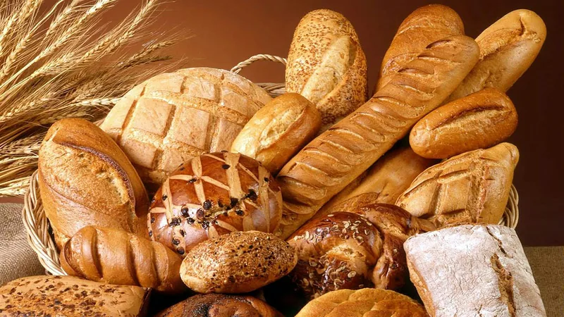
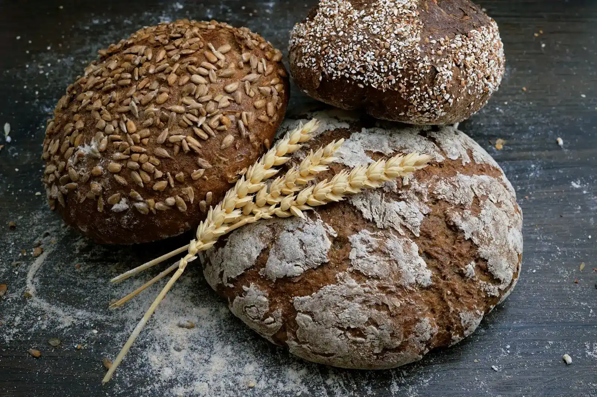
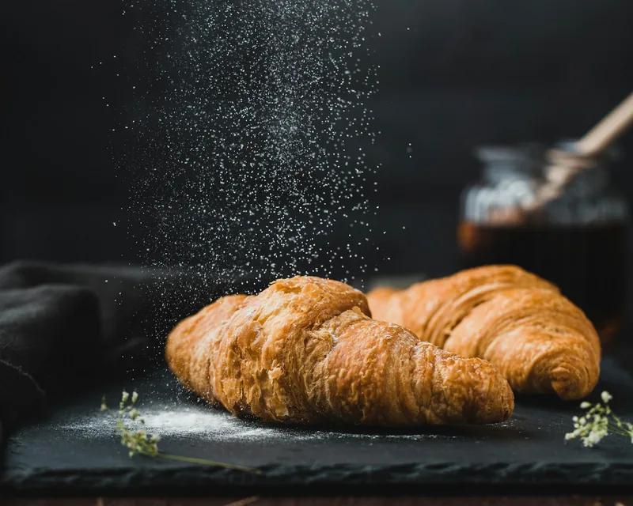
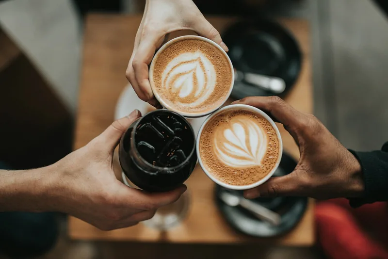
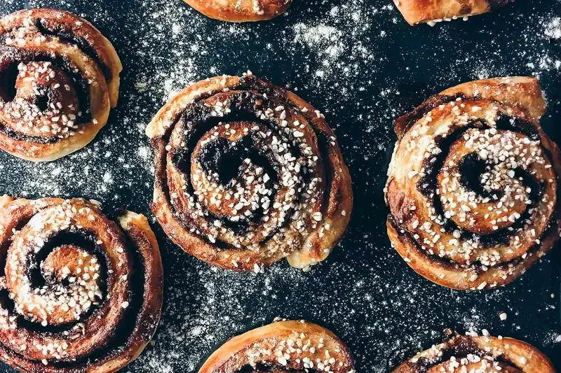
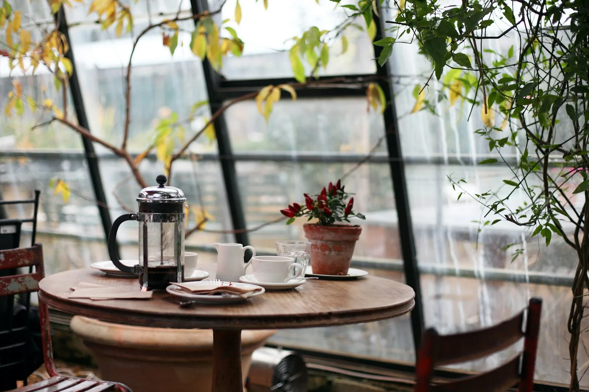
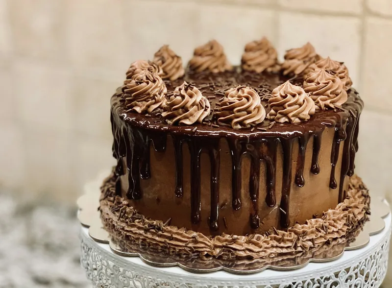

Fresh bread
Seeded, flour-dusted and crusty loaves for the table at home.
31 Backhall Street, Caerleon, Newport
A village bakery and cafe in the heart of Caerleon: baked goods, pastries, deli plates and good coffee, enjoyed in or out in the open air.




In Caerleon
The Village Bakery & Cafe sits on Backhall Street in Caerleon, a historic village on the edge of Newport. It is the kind of place to pause: coffee and a pastry in the morning, a deli plate at lunch, and a loaf to take home.
Visitors praise the pastries and pasties, the friendly staff and the pleasant outdoor seating. The menu stays small and focused, so what is served is done well.
Plan your visit
From the bakery

Seeded, flour-dusted and crusty loaves for the table at home.
The counter favourites visitors mention most: pastries and pasties, baked through the day.

Cakes, cupcakes and sweet bakes for coffee, celebrations and taking home.
Inside & out
Tap any photograph to view it larger.
Why locals choose it
Drawn from the themes of the cafe's public reviews, not invented praise.
Baked goods are the most praised part of a visit.
Welcoming service, noted again and again.
A good spot outside when the weather allows.
Focused choices, well made, rather than a long list.
Find us
01633 439500
thevillagecaerleon@gmail.com
facebook.com/thevillagecaerleon
| Monday to Saturday | 8am – 6pm |
|---|---|
| Sunday | 10am – 3pm |
Good to know
31 Backhall Street, Caerleon, Newport NP18 1AR, Wales, UK.
Monday to Saturday 8am to 6pm, and Sunday 10am to 3pm.
Yes, visitors note the pleasant outdoor seating.
Cafe, British, deli and Welsh food, with bakery goods, pastries, pasties and coffee.
Yes, ask in store about the day's bread, pastries and cakes to take away.
Get in touch
Send a message and it will open in your email app, addressed to the cafe. Or call directly.